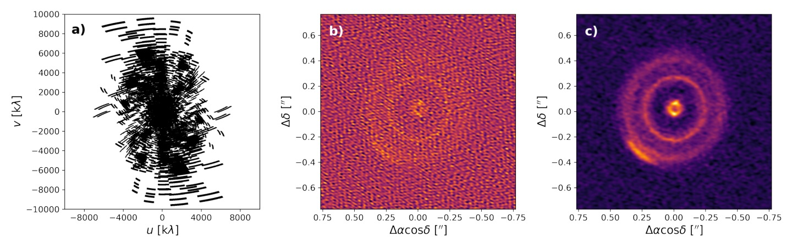
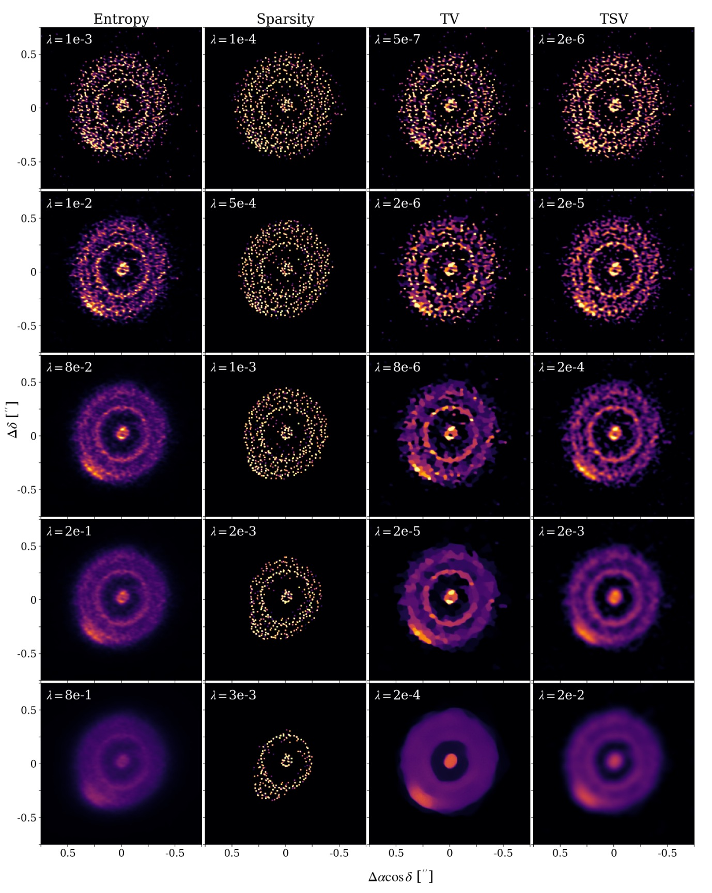
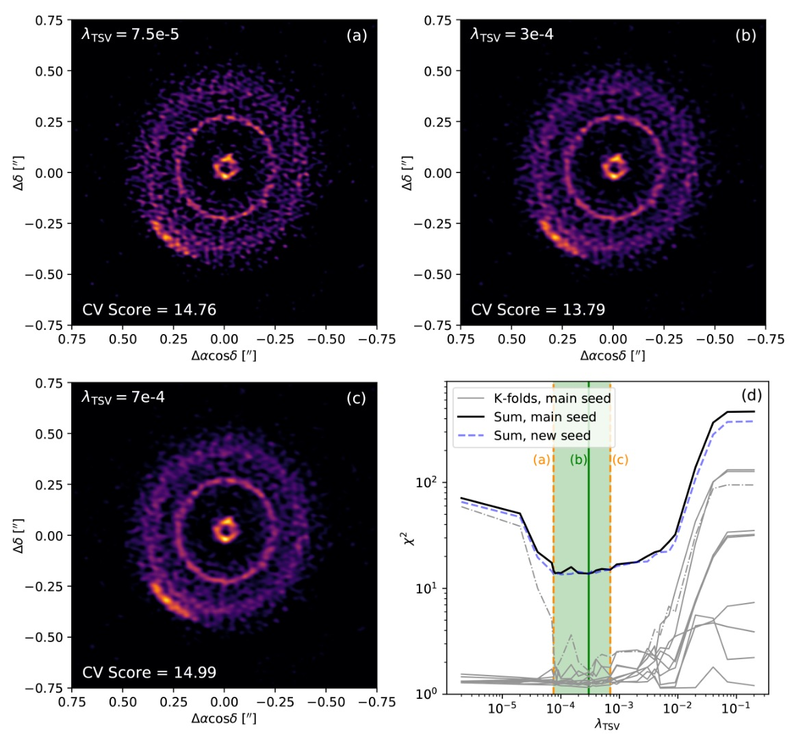

Research · Research internship · May–August 2021; paper published 2023
Reconstructing the unseen
NRAO · MPoL · regularized imaging and validation for ALMA
How can an image be reconstructed from incomplete measurements without mistaking a plausible reconstruction for a supported one? At NRAO, I explored regularization with MPoL and helped make the imaging workflow accessible through GPU-enabled tutorials.
My role
Regularization experiments · GPU/Colab tutorial development · coauthor
HD 143006: dirty image, CLEAN, and RML reconstruction. Figure 10 from our coauthored ALMA paper; the lower row uses a common color scale.
The research question
An interferometer samples spatial frequencies rather than recording a complete image directly. Missing measurements leave many possible images compatible with the observations. The challenge is to recover structure while controlling the influence of assumptions about sparsity, smoothness, and image intensity.
During my NRAO research internship, I studied the imaging and interferometry background, ran regularization experiments in Python and MPoL, recorded the process, and contributed to an open-source tutorial. The work led to coauthorship on a collaborative study of ALMA protoplanetary-disk imaging.

The measurement pattern already shapes the image. Figure 1 of Zawadzki et al. shows incomplete (u, v) coverage alongside uniformly and Briggs-weighted dirty images. Original source ↗
From measurements to a validated image
MPoL provides PyTorch-based primitives for constructing an interferometric imaging model. A candidate sky image is transformed into predicted visibilities, compared with the measured data, and optimized with regularization terms. The regularizers favor different image properties; their strengths must be chosen with care.
Maximum entropy controls the distribution of image intensity.
Sparsity favors a compact distribution of emission.
Total variation and total squared variation impose different forms of spatial smoothness.

Figure 4: the four regularizers applied separately. Strength increases from top to bottom; the same observations can produce very different images. Original source ↗
01 · RepresentA candidate sky image
Image parameters encode the brightness distribution.
02 · PredictVisibility measurements
The forward model maps the image to sampled spatial frequencies.
03 · OptimizeData fit + regularization
Balance agreement with observations against the selected image priors.
04 · ValidateHeld-out measurements
Use cross-validation and synthetic ground truth to inspect reconstruction quality.
Choose evidence over visual preference
The collaborative paper compares random-cell and dartboard cross-validation, using held-out visibilities to evaluate regularization settings. It also tests synthetic disk observations against known ground truth. This separates a visually attractive reconstruction from one whose predictions are supported by measurements.
A useful result is a range of well-performing regularization strengths. In the example below, different settings achieve similarly low validation scores. That is a reason to inspect sensitivity to modeling choices rather than treat a single image as uniquely determined.

Figure 6: reconstructions and cross-validation scores for TSV regularization. The curve identifies a range of comparable fits, with individual folds revealing how withheld observations affect the score. Original source ↗
Make the workflow usable on a GPU
I created and improved tutorial content, added a Google Colab route, and used GPU computation for the imaging workflow. A retained 2021 notebook documents the practical sequence: install the dependencies, check CUDA availability, select the device, construct the dataset and model, and run an optimization loop.
The notebook preserves a True result for CUDA availability and a cuda:0 device output. Its loss combines the visibility likelihood with sparsity and total-variation penalties, using Adam for 600 epochs. These are concrete implementation records from the tutorial; MPoL supplies the underlying imaging primitives.
Retained notebook · loss inside the optimization loop
The coauthored paper evaluates real HD 143006 observations and synthetic protoplanetary-disk data. In the HD 143006 comparison, it reports up to a factor of three improvement in spatial resolution relative to CLEAN without sacrificing sensitivity. This is a result of the collaborative paper, rather than a standalone benchmark of my notebook.
My role as a research intern and coauthor combined regularization experiments and analysis with documentation and GPU/Colab integration, working within the MPoL framework developed by the research team.
Ran and documented experiments to compare regularizers for incomplete observations.
Developed tutorial material that made GPU-based use through Colab more approachable.
Connected mathematical background, implementation, and reconstruction analysis.
Contributed to the subsequent PASP publication with the research team.
What I carry into robotics
This work gave me an early view of a problem that still motivates my research: a representation can look convincing while depending strongly on unobserved information. I learned to inspect what the measurements constrain, compare alternative assumptions, and make validation part of the workflow.
In robotics, I now ask which additional observation or interaction can resolve an assumption that matters to the next action. Scientific imaging supplied an important foundation for that habit of reasoning.
Outcomes
Coauthored PASP article on regularized image synthesis and validation for ALMA observations.
Open-source tutorial work and a retained GPU/Colab implementation record.
A foundation in incomplete observations, explicit priors, and validation.
A robot can recognize a scene and still lack the evidence needed for its next action. I built a benchmark and diagnostic reference pipeline that connect view selection to the current manipulation command.
A symmetry-aware VLA framework that combines action generation, predicted consequences, and adaptive interaction. My interest is in policies that can respond when physical observations disagree with an expected trajectory.